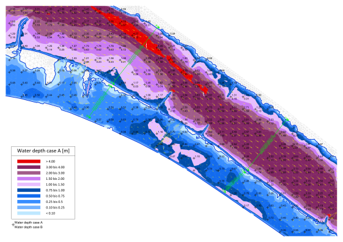

ChEsher
ChEsher is an additional tool to Blue Kenue™ that is a pre and post processing software for the open TELEMAC-MASCARET system - an integrated suite of solvers for use in the field of free-surface flow of hydraulic modeling. The tool was created for engineering purposes with the aim to support hydraulic engineers in converting file formats, generating meshes and processing respectively visualizing results from a hydraulic simulation.
The main freatures are:
- converting geometries from and to DXF file format
- converting geometries from and to Blue Kenue™ file formats
- generating meshes from linear structures like dams, dikes, road corridors, embankments and, of course, channels
- visualizing results (scalars and vectors) on a rasterized grid for DXF file format
- generating contour plots for DXF file format
- generating tubes data file

ChEsher is separated to various modules:
- DXF2BK provides transformations from the DXF format to geometric objects that can be red by Blue Kenue™.
- BK2DXF transforms a 2D T3 Scalar Mesh to DXF format.
- Mesh creates channel meshes out of profiles and boundaries as well as breaklines if desired.
- LandXML transforms a 2D T3 Scalar Mesh to a LandXML surface that can be imported to a CAD program.
- ScalarDXF creates a DXF raster with attributes of a 2D T3 Scalar Mesh, for example water depths or water surface differences.
- VectorDXF creates a DXF raster with vectors of a 2D T3 Vector Mesh, for example flow velocities.
- CS formats the control sections output file and creates a DXF file with the control sections.
- 2DM2BK transforms the contents from a SMS Mesh File to a T3 Scalar Mesh and to 2D/3D Line Sets.
- Cont2DXF creates a contour plot from a T3 Scalar Mesh and writes it to a DXF file.
- Tubes creates a tubes data file out of a T3 Scalar Mesh and a 2D Line Set.
Requirements
A solid knowledge in the use of Blue Kenue™ and in performing hydraulic simulations with Telemac 2d is required to take advantage from ChEsher.
Download & Install
ChEsher is an Open Source project written in Python 2.7.3 and comes under the GNU General Public License v2.0. Visit GitHub to download the whole repository as ZIP. There are precompiled installers for windows available. For other operating systems you can use the source code and run ChEsher with Python, which then has to be installed on your operating system with all the necessary python packages.
How to use the documentation
Each module is documented separately and an example is added. To implement most of the examples it is necessary to run the Telemac 2d validation test case donau with the *.cas files in the examples folder at first. The *.cas files differ in the velocity diffusivity factor:
- case A: VELOCITY DIFFUSIVITY = default
- case B: VELOCITY DIFFUSIVITY = 10.0
The input files for all the examples can be found in the examples folder.